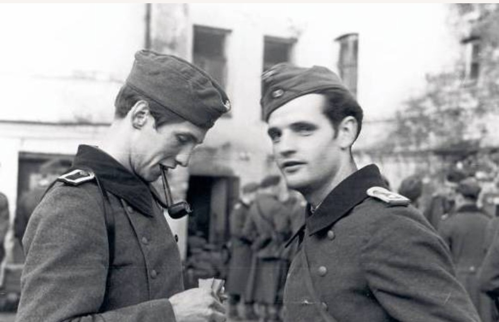
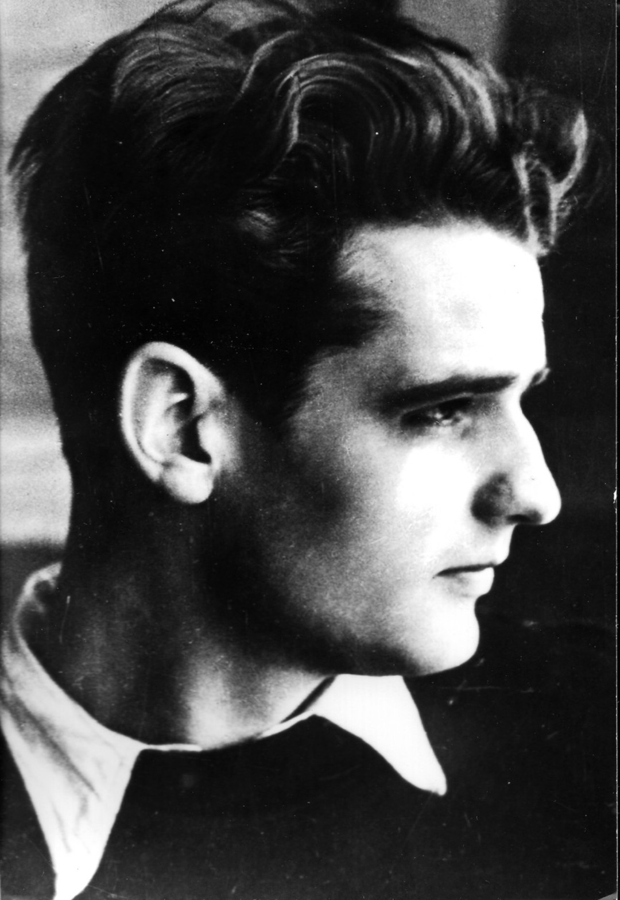

Hans Scholl et Alexander Schmorell – Munich, 1942
La Rose Blanche (*Die Weiße Rose*) est un groupe de résistance civile formé en 1942 à Munich par des étudiants et un professeur. Leur objectif : éveiller les consciences allemandes face aux crimes du régime nazi, en diffusant des tracts dénonçant la dictature, les persécutions et la guerre menée par Hitler.
Le groupe choisit ce nom pour symboliser une résistance morale et pacifique. La rose blanche représente la pureté, l’innocence et la lumière qui ne peut être corrompue par la propagande nazie. Leur combat n’est pas armé : il repose sur la conscience, la vérité et le refus de la barbarie.
Hans Scholl et Alexander Schmorell, passionnés de philosophie et de poésie, s’inspirent des écrits de Novalis et des mystiques allemands où la rose blanche apparaît comme un symbole de jeunesse, de liberté intérieure et de courage spirituel. Ce nom discret permet aussi de ne pas attirer l’attention de la Gestapo tout en affirmant une identité profondément humaniste.
Pour les membres de la Rose Blanche, résister signifiait éclairer les consciences. Leur nom incarne cette idée : une fleur fragile, mais impossible à faire taire.
Le groupe est composé de :

Sophie Scholl – Portrait d’époque (Rose Blanche)
Entre 1942 et 1943, les membres de la Rose Blanche rédigent et distribuent des tracts antinazis dans les universités et les villes allemandes. Ces textes dénoncent la dictature, les massacres et l’idéologie raciale du régime.
Leur courage est exceptionnel : ils agissent sans armes, uniquement par la parole et l’écrit, au cœur même de l’Allemagne nazie.
Christoph Probst – Rose Blanche (1942)
Le 18 février 1943, Sophie et Hans Scholl sont surpris en train de disperser des tracts dans l’université de Munich. Arrêtés par la Gestapo, ils sont jugés en quelques heures et condamnés à mort.

Hans Scholl – Portrait d’époque (Rose Blanche)
Sophie, Hans et Christoph Probst sont exécutés à la guillotine le 22 février 1943. Sophie avait 21 ans.
La Rose Blanche est aujourd’hui un symbole majeur de la résistance civile au nazisme. En Allemagne, des écoles, des rues et des monuments portent leur nom. Leur message de courage moral et de liberté de pensée reste universel.